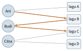

Bab 34
Belajar dari Jejak Pengguna
Kuliah learning from user-generated data saya ikuti pada musim panas 2025, diberikan oleh kelompok Markus Schedl, yang banyak meneliti rekomendasi musik. Sebelas kuliahnya bergerak dari collaborative filtering klasik ke evaluasi, data teks dan data implisit, sistem rekomendasi berbasis graf, hibrida, dan konteks, lalu ditutup dengan dua topik yang jarang dibahas di kuliah teknis: bias dan keadilan, serta sistem rekomendasi yang diilhami psikologi. Latihannya membangun rekomendasi item-kNN dari umpan balik implisit, model faktor laten, dan evaluasi dengan nDCG.
Sistem rekomendasi barangkali adalah machine learning yang paling sering kita temui tanpa disadari: video berikutnya, lagu berikutnya, produk yang “mungkin juga Anda suka”. Datanya adalah jejak yang ditinggalkan jutaan pengguna, berupa rating, klik, putaran lagu, dan waktu menonton, dan tugasnya adalah menebak apa yang akan disukai seseorang dari apa yang disukai orang-orang lain.
Collaborative filtering
Data dasarnya adalah matriks pengguna terhadap item, dengan rating di sel yang diketahui dan kosong di sebagian besar sel lainnya. Collaborative filtering berbasis pengguna mengikuti logika sederhana: cari pengguna lain yang selera masa lalunya mirip denganmu, lalu rekomendasikan apa yang mereka sukai. Kemiripan biasanya diukur dengan kosinus atau korelasi Pearson antara vektor rating. Untuk dua pengguna dengan rating \((5,3,4)\) dan \((4,2,5)\) pada tiga item yang sama, kemiripan kosinusnya \[\frac{5\cdot4+3\cdot2+4\cdot5}{\sqrt{5^2+3^2+4^2}\sqrt{4^2+2^2+5^2}}=\frac{46}{\sqrt{50}\sqrt{45}}\approx0{,}97.\] Korelasi Pearson mengurangkan rata-rata rating setiap pengguna lebih dulu, sehingga pengguna yang selalu memberi rating tinggi dan pengguna yang pelit rating tetap bisa dikenali sebagai bersepakat. Contohnya, pengguna dengan rating \((5,4,5)\) dan pengguna dengan rating \((3,2,3)\) punya selera yang sama persis, hanya skalanya yang berbeda. Setelah rata-ratanya dikurangkan, keduanya menjadi \((\tfrac13,-\tfrac23,\tfrac13)\), dan korelasinya tepat satu.
Prediksi rating lalu dihitung sebagai rata-rata berbobot dari rating tetangga-tetangga terdekat, juga relatif terhadap rata-rata masing-masing: \[\hat r_{ui}=\bar r_u+\frac{\sum_{v\in N(u)}s_{uv}\,(r_{vi}-\bar r_v)}{\sum_{v\in N(u)}|s_{uv}|},\] dengan \(N(u)\) tetangga-tetangga \(u\) yang pernah menilai item \(i\) dan \(s_{uv}\) kemiripannya. Misalkan rata-rata rating Ani \(3{,}5\), dan dua tetangganya menilai sebuah film dengan \(+1\) dan \(+0{,}5\) di atas rata-rata mereka sendiri, dengan kemiripan \(0{,}9\) dan \(0{,}6\). Prediksinya \(3{,}5+(0{,}9+0{,}3)/1{,}5=4{,}3\). Rekomendasi ini mudah dijelaskan kepada pengguna: “orang-orang dengan selera serupa denganmu menyukai film ini”.
Versi berbasis item (Sarwar dkk. 2001) membalik sudut pandangnya: item yang sering disukai oleh orang yang sama dianggap mirip, dan kita merekomendasikan item yang mirip dengan yang sudah kamu sukai. Karena jumlah item biasanya lebih stabil daripada jumlah pengguna, kemiripan antar item bisa dihitung lebih jarang dan dipakai ulang, sehingga pendekatan ini lebih mudah diskalakan.
Faktor laten
Pendekatan yang menjadi inti solusi-solusi terbaik dalam kompetisi Netflix Prize adalah faktorisasi matriks (Koren, Bell, dan Volinsky 2009). Setiap pengguna \(u\) dan setiap item \(i\) diwakili oleh vektor berdimensi kecil, \(\boldsymbol p_u\) dan \(\boldsymbol q_i\), dan rating diprediksi sebagai \[\hat r_{ui}=\mu+b_u+b_i+\boldsymbol p_u^\top\boldsymbol q_i,\] dengan \(\mu\) rata-rata global, \(b_u\) kecenderungan pengguna memberi rating tinggi atau rendah, dan \(b_i\) kecenderungan item dinilai tinggi atau rendah. Vektor-vektor ini dilatih dengan meminimalkan galat kuadrat pada rating yang diketahui saja, ditambah regularisasi L2: \[\mathcal{L}=\sum_{(u,i)\ \text{diketahui}}\big(r_{ui}-\hat r_{ui}\big)^2+\lambda\big(b_u^2+b_i^2+\|\boldsymbol p_u\|^2+\|\boldsymbol q_i\|^2\big).\] Turunan terhadap \(\boldsymbol p_u\) untuk satu rating, dengan galat \(e_{ui}=r_{ui}-\hat r_{ui}\), adalah \(-2e_{ui}\boldsymbol q_i+2\lambda\boldsymbol p_u\). Langkah SGD (Bab 4) dengan laju \(\eta\), faktor dua diserap ke dalam \(\eta\), menjadi \[\boldsymbol p_u\leftarrow\boldsymbol p_u+\eta\big(e_{ui}\boldsymbol q_i-\lambda\boldsymbol p_u\big),\qquad \boldsymbol q_i\leftarrow\boldsymbol q_i+\eta\big(e_{ui}\boldsymbol p_u-\lambda\boldsymbol q_i\big).\] Alternatif yang dibahas di kuliah adalah alternating least squares (ALS). Kalau semua vektor item \(\boldsymbol q_i\) dibekukan, loss di atas menjadi masalah kuadrat terkecil biasa untuk setiap \(\boldsymbol p_u\), dengan regresi ridge yang punya solusi tertutup. Menyamakan gradien dengan nol memberi \[\boldsymbol p_u=\big(\boldsymbol Q_u^\top\boldsymbol Q_u+\lambda\boldsymbol I\big)^{-1}\boldsymbol Q_u^\top\boldsymbol r_u,\] dengan \(\boldsymbol Q_u\) matriks berisi vektor item yang dinilai \(u\) dan \(\boldsymbol r_u\) rating-ratingnya (setelah bias dikurangkan). Lalu peran ditukar: bekukan semua \(\boldsymbol p_u\) dan selesaikan setiap \(\boldsymbol q_i\) dengan cara yang sama. Setiap langkah tidak pernah menaikkan loss, dan setiap pengguna bisa diselesaikan secara paralel. Untuk data implisit, ALS punya keuntungan tambahan: semua sel kosong bisa diperlakukan sebagai nol dengan bobot kecil tanpa harus diiterasi satu per satu.
Dimensi-dimensi laten tidak diberi nama, tetapi sering bisa ditafsirkan: untuk film, satu dimensi mungkin memisahkan film serius dari komedi, dimensi lain film untuk penonton dewasa dari film keluarga. Ini analisis faktor dari Bab 6, diterapkan pada matriks yang sebagian besar kosong.
Dalam praktik, kebanyakan data bukan rating, melainkan umpan balik implisit: klik, putaran, pembelian. Data ini tidak punya sinyal negatif yang jelas, karena tidak mengklik bisa berarti tidak suka atau sekadar tidak melihat. Bayesian personalized ranking (Rendle dkk. 2012) mengubah tujuannya menjadi peringkat: untuk setiap pengguna, item yang pernah ia pakai seharusnya diberi skor lebih tinggi dari item yang belum. Loss-nya \(-\sum\ln\sigma(\hat x_{ui}-\hat x_{uj})\) untuk pasangan item \(i\) yang dipakai dan \(j\) yang tidak, sebuah binary cross-entropy atas pasangan. Neural collaborative filtering (He dkk. 2017) mengganti hasil kali titik dengan jaringan saraf, dan pendekatan berbasis graf seperti LightGCN (He dkk. 2020) memandang pengguna dan item sebagai simpul graf bipartit dan menyebarkan embedding lewat message passing (Bab 13).
Faktorisasi matriks paling kecil bisa diikuti dengan tangan. Dua pengguna dan dua film, dengan satu dimensi laten dan tanpa bias: Ani memberi film pertama rating 4, Budi memberi film pertama 2 dan film kedua 1, dan rating Ani untuk film kedua belum diketahui. Model \(\hat r_{ui}=p_uq_i\) dengan \(p_{\mathrm{Ani}}=2\), \(p_{\mathrm{Budi}}=1\), \(q_1=2\), dan \(q_2=1\) menjelaskan ketiga rating yang diketahui dengan tepat. Prediksinya untuk sel yang kosong adalah \(2\cdot1=2\). Dimensi laten tunggal ini bisa dibaca sebagai “seberapa suka menonton film” untuk pengguna dan “seberapa disukai” untuk film. Ani menyukai segala sesuatu dua kali lebih dari Budi, dan film kedua kurang disukai, sehingga Ani diramal memberi film kedua rating yang sama dengan rating Budi untuk film pertama. Solusinya tidak unik: mengalikan semua \(p\) dengan dua dan membagi semua \(q\) dengan dua memberi prediksi yang sama, dan regularisasi L2 di loss memilih skala yang menyeimbangkan keduanya.
Untuk umpan balik implisit, Hu, Koren, dan Volinsky (2008) memisahkan dua hal yang di data rating menyatu: preferensi dan keyakinan. Preferensi \(p_{ui}\) bernilai satu kalau pengguna pernah memakai item dan nol kalau tidak. Keyakinan \(c_{ui}=1+\alpha r_{ui}\) naik dengan jumlah interaksi \(r_{ui}\), misalnya berapa kali sebuah lagu diputar. Loss-nya adalah kuadrat terkecil berbobot atas semua sel, \(\sum_{u,i}c_{ui}(p_{ui}-\boldsymbol x_u^\top\boldsymbol y_i)^2\) ditambah regularisasi. Lagu yang diputar lima puluh kali dengan \(\alpha=40\) diberi bobot 2001, sedangkan lagu yang tidak pernah diputar tetap ikut dihitung dengan bobot satu, sebagai bukti lemah bahwa pengguna tidak tertarik. Karena semua sel ikut, SGD menjadi terlalu mahal, dan ALS di atas dipakai dengan trik aljabar yang membuat sel-sel kosong tidak perlu diiterasi satu per satu.
Mengukur rekomendasi yang baik
Galat rating seperti RMSE kurang relevan kalau yang ditampilkan adalah daftar sepuluh teratas. Ukuran yang peka peringkat lebih cocok. Precision dan recall pada \(k\) teratas menghitung berapa item relevan yang masuk daftar. Discounted cumulative gain (Järvelin dan Kekäläinen 2002) menambahkan bahwa item relevan di urutan atas lebih berharga daripada di urutan bawah, \[\mathrm{DCG}@k=\sum_{i=1}^k\frac{\mathrm{rel}_i}{\log_2(i+1)},\] dan versi ternormalisasinya, nDCG, membaginya dengan DCG dari urutan terbaik yang mungkin. Untuk daftar dengan relevansi \((3,2,0,1)\), DCG-nya \(3/1+2/1{,}585+0/2+1/2{,}322\approx3+1{,}262+0+0{,}431=4{,}693\). Urutan idealnya \((3,2,1,0)\) dengan DCG \(3+1{,}262+0{,}5+0=4{,}762\). Maka nDCG \(\approx0{,}985\): hampir sempurna, hanya item relevan terakhir yang sedikit terlambat.
Untuk relevansi biner, dua ukuran lain sering dipakai. Average precision merata-ratakan presisi di setiap posisi tempat item relevan muncul. Kalau item relevan ada di posisi 1 dan 3 dari daftar, presisi di kedua posisi itu \(1/1\) dan \(2/3\), sehingga AP \(=(1+0{,}667)/2\approx0{,}83\). Rata-ratanya atas semua pengguna disebut MAP. Reciprocal rank hanya melihat item relevan pertama: satu per posisinya. Kuliah menekankan bahwa ukuran-ukuran ini harus dirata-ratakan atas banyak pengguna, karena sistem yang baik untuk pengguna aktif bisa buruk untuk pengguna yang jarang datang.
Kuliah menekankan bahwa akurasi bukan segalanya. Daftar yang akurat tetapi hanya berisi item yang sudah populer tidak membantu siapa pun menemukan sesuatu yang baru. Ukuran di luar akurasi menilai keragaman daftar, kebaruan, cakupan katalog, dan serendipity, yaitu kejutan yang menyenangkan. Evaluasi offline pada data historis juga berbeda dari evaluasi online dengan pengguna sungguhan, dan studi dengan pengguna sering memperlihatkan bahwa yang dirasakan pengguna tidak selalu sejalan dengan angka offline.
Cara membagi data juga menentukan apa yang sebenarnya diukur. Pembagian acak atas interaksi membiarkan model melihat masa depan seorang pengguna saat ditanya tentang masa lalunya. Protokol leave-one-out menyisihkan interaksi terakhir setiap pengguna sebagai data uji, dan pembagian temporal memotong seluruh data pada satu titik waktu, sehingga semua yang terjadi setelahnya menjadi data uji. Pembagian temporal paling dekat dengan penerapan sungguhan, dan skornya biasanya paling rendah. Popularity bias juga bisa diukur langsung. Salah satu ukurannya adalah rata-rata popularitas item dalam daftar rekomendasi, dibanding rata-rata popularitas item dalam riwayat pengguna itu sendiri. Kalau seorang pendengar lagu-lagu langka mendapat daftar yang rata-rata popularitasnya sepuluh kali lebih tinggi dari riwayatnya, sistemnya sedang menarik dia ke arus utama.
Urutan interaksi juga membawa informasi. Rekomendasi berurutan memandang riwayat pengguna sebagai kalimat dan item berikutnya sebagai kata berikutnya. SASRec (Kang dan McAuley 2018) memakai self-attention dengan causal mask dari Bab 9: pada data yang jarang, model cenderung bertumpu pada beberapa item terakhir, mirip rantai Markov, dan pada data yang padat ia bisa memakai riwayat yang lebih panjang, mirip RNN, karena attention sendiri yang memutuskan item mana yang relevan.
Konten, konteks, dan hibrida
Collaborative filtering gagal untuk item baru yang belum pernah dipakai siapa pun dan pengguna baru yang belum punya riwayat, masalah yang disebut cold start. Rekomendasi berbasis konten mengisi celah ini dengan memakai sifat item itu sendiri: teks deskripsi, tag, atau sinyal audio sebuah lagu. Untuk teks, bobot TF-IDF memberi nilai tinggi pada kata yang sering muncul di sebuah dokumen tetapi jarang di dokumen lain, \[\mathrm{tfidf}(w,d)=\mathrm{tf}(w,d)\cdot\log\frac{N}{\mathrm{df}(w)},\] dengan \(N\) jumlah dokumen dan \(\mathrm{df}(w)\) jumlah dokumen yang memuat kata \(w\). Dalam seribu deskripsi lagu, kata “dan” muncul di hampir semua, sehingga faktor logaritmanya mendekati nol. Kata “gamelan” muncul di sepuluh deskripsi saja, sehingga faktornya \(\ln100\approx4{,}6\), dan dua lagu yang sama-sama memuatnya dianggap mirip. Model yang lebih maju memakai embedding kata dan model topik seperti LDA, yang menguraikan setiap dokumen menjadi campuran beberapa topik dan setiap topik menjadi distribusi atas kata. Sistem hibrida menggabungkan kedua sumber, misalnya dengan merata-ratakan skor, beralih di antara keduanya tergantung situasi, atau memasukkan fitur konten ke dalam model faktor.
Konteks juga mengubah apa yang pantas direkomendasikan. Lagu yang cocok untuk berolahraga pagi berbeda dari lagu untuk menjelang tidur. Kuliah memberi contoh dari riset kelompoknya sendiri tentang rekomendasi musik yang memperhitungkan lokasi dan aktivitas, dengan memetakan tempat dan lagu ke tag yang sama. Rekomendasi berbasis graf pengetahuan menyebarkan preferensi pengguna lewat relasi antar item, seperti penyanyi, genre, dan label rekaman.
Graf juga memberi cara yang intuitif untuk rekomendasi. Pengguna dan item menjadi simpul graf bipartit, dan setiap interaksi menjadi sisi (Gambar 34.1). Sebuah langkah acak dari pengguna ke item yang ia dengar, lalu ke pengguna lain yang mendengar item itu, lalu ke item lain yang didengar pengguna kedua, adalah collaborative filtering dalam bentuk jalan kaki. Item yang paling sering dicapai jalan acak tiga langkah dari seorang pengguna adalah kandidat rekomendasinya. Dalam bentuk matriks, kalau \(\boldsymbol A\) adalah matriks interaksi, skor itu sebanding dengan \(\boldsymbol A\boldsymbol A^\top\boldsymbol A\). Graf yang sama bisa diperkaya dengan simpul genre, penyanyi, atau negara, sehingga jalan acak juga bisa melewati pengetahuan tentang item.

Bias, keadilan, dan psikologi
Sistem rekomendasi tidak hanya mencerminkan selera, tetapi juga membentuknya. Popularity bias membuat item yang sudah populer semakin sering direkomendasikan, sehingga semakin populer lagi. Kinerja sistem juga bisa berbeda antar kelompok pengguna, misalnya menurut usia, jenis kelamin, atau negara. Kuliah membahas ukuran untuk mendeteksinya, seperti selisih kinerja rekomendasi antar kelompok, dan contoh dari data musik tentang bagaimana algoritme rekomendasi bisa menggeser porsi musik lokal yang diterima pendengar di berbagai negara. Strategi perbaikannya bisa diterapkan sebelum pelatihan, misalnya menyeimbangkan ulang data, selama pelatihan dengan kendala keadilan, atau sesudahnya dengan menyusun ulang daftar.
Kuliah terakhir menghubungkan rekomendasi dengan psikologi kognitif. Ingatan manusia memudar menurut kurva lupa Ebbinghaus, dan lagu yang terakhir didengar beberapa waktu lalu lebih mudah diingat kembali kalau sering diulang. Model memori dari arsitektur kognitif seperti ACT-R (Anderson dkk. 2004) dipakai untuk meramalkan lagu mana yang ingin didengar lagi seseorang, dengan menimbang seberapa sering dan seberapa baru ia mendengarkannya. Persamaan aktivasi dasarnya \[B_i=\ln\sum_{j=1}^{n}t_j^{-d},\] dengan \(t_j\) waktu sejak pemutaran ke-\(j\) dan \(d\) laju peluruhan, sering \(0{,}5\). Setiap pemutaran menyumbang, dan sumbangannya memudar seperti pangkat waktu. Lagu yang diputar sekali satu jam lalu menyumbang \(1^{-0{,}5}=1\). Lagu yang diputar empat kali, masing-masing sekitar seratus jam lalu, menyumbang \(4\times100^{-0{,}5}=0{,}4\). Jadi satu pemutaran baru lebih “hidup” di ingatan daripada empat pemutaran lama, dan model memakai aktivasi ini untuk mengurutkan lagu yang kemungkinan besar ingin diulang. Kuliah juga membahas kepribadian, misalnya lima dimensi Big Five yang diukur dengan kuesioner atau ditaksir dari jejak digital, sebagai sinyal tambahan untuk menyesuaikan seberapa beragam atau seberapa akrab rekomendasi bagi seseorang. Sistem rekomendasi yang diilhami psikologi ini juga lebih mudah dijelaskan, karena alasannya bisa diungkapkan dengan bahasa yang dipahami manusia.
Di luar layar
Rekomendasi adalah masalah keputusan berurutan, sehingga reinforcement learning (Bab 16) mulai dipakai untuk mengoptimalkan kepuasan jangka panjang, bukan klik berikutnya. Gagasan faktorisasi matriks juga muncul di bidang lain: matriks senyawa terhadap target di penemuan obat (Bab 23) sama jarangnya dengan matriks pengguna terhadap film, dan model yang belajar dari banyak target sekaligus memakai logika yang sama dengan collaborative filtering. Dan pertanyaan tentang bias serta dampak sosial rekomendasi membawa kita ke bab berikutnya.
Perkembangan riset
Sistem rekomendasi skala besar mulai meniru resep model bahasa. TIGER (Rajput dkk. 2023) memberi setiap item sebuah semantic ID, deretan kode diskret yang dibangun dari embedding konten item, sehingga item yang mirip punya awalan kode yang sama. Transformer lalu dilatih membangkitkan semantic ID item berikutnya dari deret item yang baru dipakai pengguna, alih-alih mencari tetangga terdekat di ruang embedding. Karena kode dibangun dari konten, item baru tanpa riwayat interaksi tetap bisa direkomendasikan, sebagian jawaban atas masalah cold start. HSTU (Zhai dkk. 2024) merumuskan rekomendasi sebagai transduksi deret dalam kerangka generatif, dengan arsitektur yang dirancang untuk aliran data yang besar dan terus berubah. Model dengan 1,5 triliun parameter dilaporkan menaikkan metrik dalam uji A/B daring sebesar 12,4 persen, dan kualitasnya mengikuti hukum pangkat terhadap komputasi pelatihan selama tiga orde besaran, seperti hukum penskalaan model bahasa di Bab 38.
Catatan sumber.
Bab ini mengikuti kuliah dan latihan Learning from User-generated Data: collaborative filtering, faktor laten, evaluasi, data konten dan implisit, rekomendasi berbasis graf, hibrida, konteks, bias dan keadilan, serta sistem rekomendasi yang diilhami psikologi.